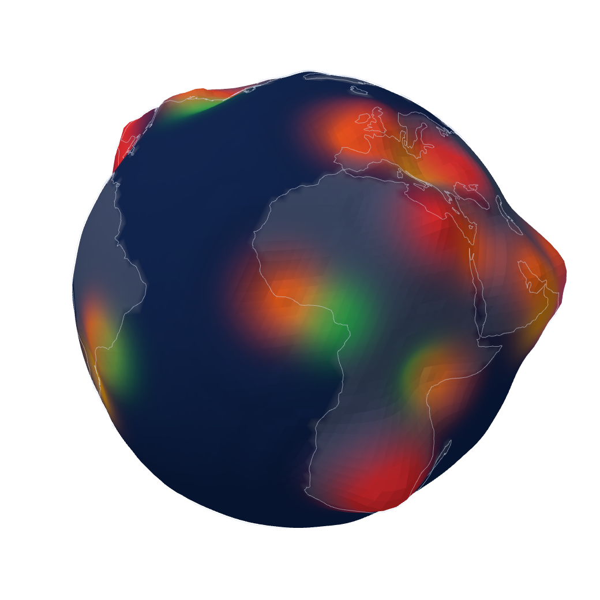

The kind rise and the thankful fall by the same amount, so the sea never gets higher. It only moves.
អ្នកមានចិត្តល្អឡើង ហើយអ្នកដឹងគុណចុះ ក្នុងចំនួនដូចគ្នា ដូច្នេះសមុទ្រមិនដែលខ្ពស់ឡើងទេ។ វាគ្រាន់តែផ្លាស់ទី។